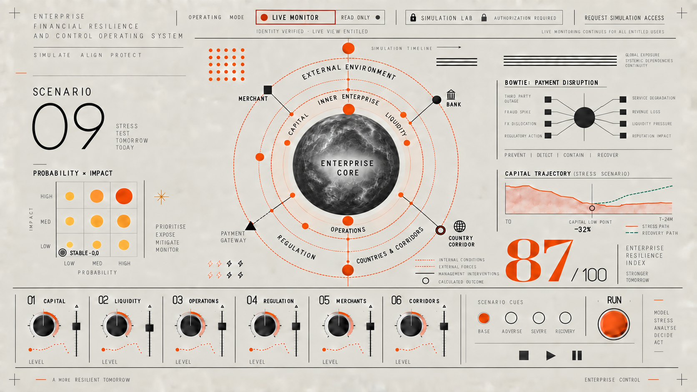
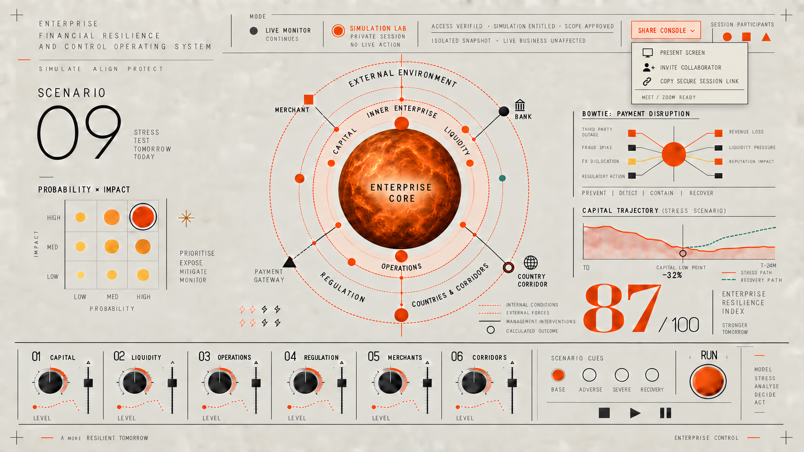

01 Live Monitor
Default · read only
The live state is the default. Simulation access is checked before a private workspace is created.
Live Monitor remains read-only and available to entitled users. Simulation Lab is an authorised, isolated workspace that can be shared with selected participants without changing the live business or anyone else's dashboard.

The live state is the default. Simulation access is checked before a private workspace is created.

The authorised session is isolated from live operations and supports presenting, inviting collaborators and sharing a secure session link.